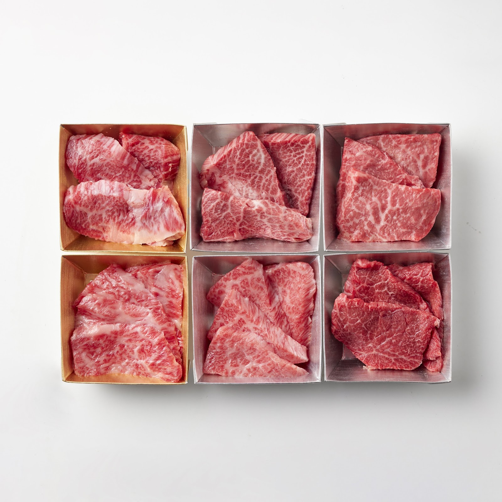
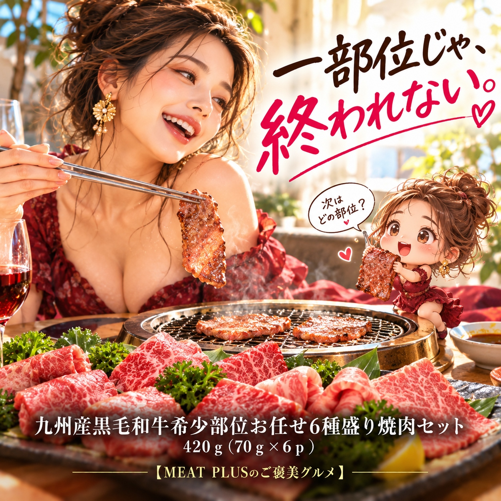
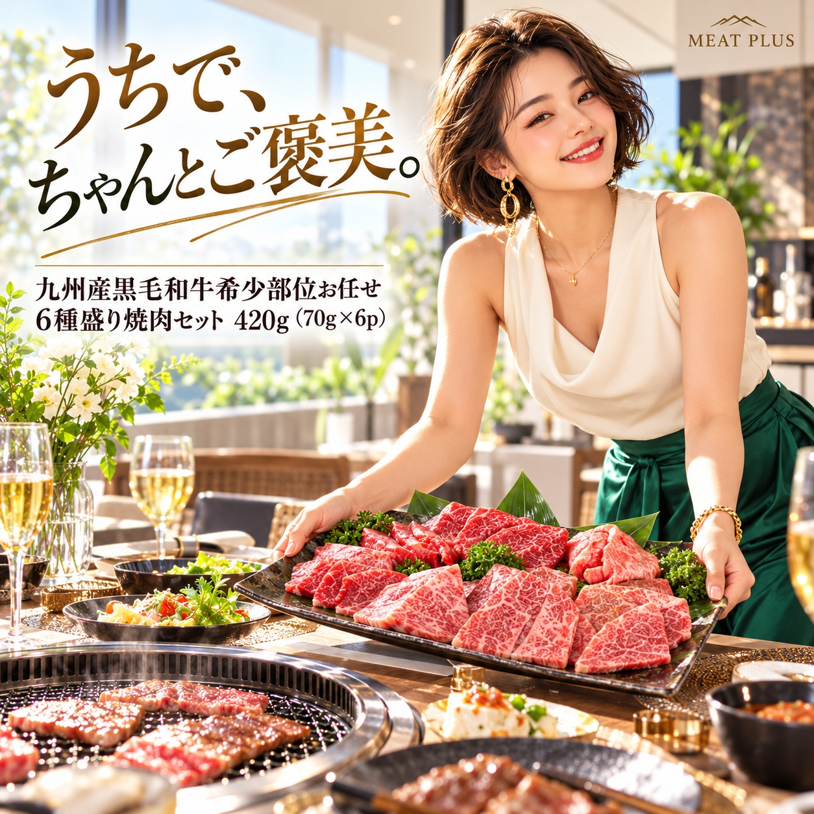

SCENE 01
M002

m 贈り物
九州産黒毛和牛希少部位お任せ6種盛り焼肉セット
【今日はちょっと贅沢に。職人厳選、黒毛和牛の希少部位焼肉。】
- 内容量420ｇ（70ｇ×6ｐ）
- 保存冷凍
- 産地日本
商品の特徴を読む
特別な日の食卓に、あるいは頑張った自分へのご褒美に、本格的な焼肉はいかがでしょうか。ジュワッと広がる上質な脂の甘みと、赤身の濃厚な旨みが楽しめる、九州産の黒毛和牛をご用意しました。このセットの魅力は、なんといっても希少部位の食べ比べ。その日一番状態の良いA等級以上の黒毛和牛から、肉のプロがイチボ、ヒウチ、ランプなどを含む6つの部位を厳選してお届けします。何が届くかはお楽しみ。毎回違う発見があるのも魅力の一つです。70gずつの便利な個包装になっているので、少しずつ楽しみたい方や、お二人でのお食事にもぴったり。冷凍庫にストックしておけば、いつでも手軽に専門店のような味わいをご堪能いただけます。大切な方への贈り物としても、きっと喜ばれる逸品です。箱を開けた瞬間の驚きと、舌の上でとろける至福のひとときを、ぜひご家庭でお楽しみください。
公式サイトへ移動します。価格・在庫・配送条件は移動先で最終確認してください。

SCENE 02
ジュワッと広がる上質な脂の甘みと、赤身の濃厚な旨みが楽しめる、九州産の黒毛和牛をご用意しました。

SCENE 03
冷凍庫にストックしておけば、いつでも手軽に専門店のような味わいをご堪能いただけます。
PRODUCT INFORMATION
購入前に確認したい商品情報
- 商品名
- 九州産黒毛和牛希少部位お任せ6種盛り焼肉セット
- 商品規格
- 420ｇ（70ｇ×6ｐ）
- 保存方法
- 冷凍
- 原産国
- 日本
- 製造地
- 日本
- 賞味期限
- 発送日より3ヶ月
原材料
牛ロースor牛バラor牛モモor牛肩or牛イチボor牛ヒウチor牛ランプor牛トウガラシ（国内産黒毛和種）
FAQ
購入前のよくあるご質問
部位は指定できますか？
申し訳ございませんが、部位の指定は承っておりません。その日最も状態の良いA等級以上の黒毛和牛から、プロの目利きで6種類の希少部位を厳選してお届けする「お任せ」セットとして、一期一会の味わいをお楽しみいただいております。
420gは何人前ですか？
一般的に、大人1人前の焼肉の量は150g～200gが目安とされておりますので、約2～3名様でお楽しみいただける量でございます。70gずつの個包装になっておりますので、人数やシーンに合わせて調整しやすいのも特徴です。
MEAT PLUS OFFICIAL SHOP
【今日はちょっと贅沢に。職人厳選、黒毛和牛の希少部位焼肉。】
仕入れ・加工・梱包・発送まで自社で行うMEAT PLUSの公式オンラインショップでご注文いただけます。
公式オンラインショップで購入する商品選びの要点
九州産黒毛和牛希少部位お任せ6種盛り焼肉セット。商品規格：420ｇ（70ｇ×6ｐ）。保存方法：冷凍。原産国：日本。製造地：日本。賞味期限：発送日より3ヶ月。
価格・在庫・配送日・送料・ギフト対応は、公式通販の商品ページで最新情報をご確認ください。
もう少し、見てみる？
こちらの商品もチェック